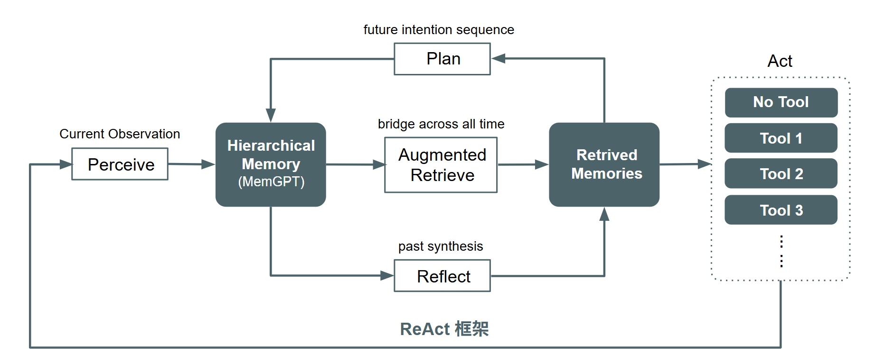

模組家族¶
這一頁整理 Agentic SDK 的五個模組家族，先定義家族層級的分工，再交代文件採用的標準名、資料交換方式與閱讀順序。當你先看清楚需求落在哪一個家族，再進對應頁面查模組標準名與標準輸入輸出格式，會比較容易掌握整條 workflow 的接手關係。
概觀¶
一輪 workflow 會依序經過輸入整理、作業安排、資料補回、內容生成與輸出檢查。這五段工作分別由 Perceive、Plan、Retrieve、Action 與 Reflect 接手，形成一條能夠往前推進，也能回頭補資料與重寫內容的處理流程，如圖 1 所示。

圖 1：五個模組家族在 workflow 中的接手順序。
目前這份定義處理的是單輪 request / response，節點之間以 JSON 物件交換資料，輸入來源包含純文字、結構化欄位與圖片檔，圖片格式支援 image/png、image/jpeg、image/webp。在這個範圍裡，使用者介面分別對接 Perceive 的輸入與 Action 的輸出；Plan、Retrieve、Reflect 則共用同一份 workflow 內部資料物件，這份物件在文件裡統一寫成 Entities。先看下面這張表，可以快速掌握五個家族各自的標準模組與主要工作。
| 家族 | 標準模組列表 | 主要工作 |
|---|---|---|
| Perceive | PassThroughPerceive、TextPerceive、StructuredPerceive、TextImagePerceive | 把原始輸入整理成查詢、標籤與摘要。 |
| Plan | NextStepPlan | 決定下一步交給 Retrieve 還是 Action。 |
| Retrieve | KeywordRetrieve、SemanticRetrieve、HybridRetrieve | 查回條目、歷史紀錄、知識內容或比對結果。 |
| Action | DirectAnswerAction、GenerativeAction、StructuredAction | 組成自然語言回應或固定欄位輸出。 |
| Reflect | ResponseCheckReflect、EvidenceCheckReflect | 檢查回應完整性與證據是否足夠。 |
表 1：五個模組家族的標準模組名與主要工作對照表。
表 1 使用的是文件標準名。讀完這張表之後，接下來最需要補上的就是家族之間實際交換的是哪一份資料，因此下一節會把共用的 Entities 物件整理出來。各頁也會列出標準名對應的既有類別名稱，以及標準輸入輸出格式，方便你把家族定義對回實際實作。
需要模型的標準模組會各自持有 OpenAI-compatible 連線設定。也就是每個 TextPerceive、NextStepPlan、GenerativeAction、StructuredAction、ResponseCheckReflect 等模組都要明確提供 api_key、base_url 與 model；不使用全域預設模型，也不由 SDK 自動挑選模型。
Entities¶
Entities 是 workflow 內部節點交換資料時使用的核心標準物件。Plan、Retrieve、Reflect 這三個家族都讀寫同一份物件；真正會因模組型態而改變的是 Perceive 的輸入參數與 Action 的輸出參數，因此留在各自模組頁定義即可。這一頁只需要掌握一件事：Perceive 與 Action 會有各自不同的參數，而 Plan、Retrieve、Reflect 則透過同一份 Entities 在 workflow 內部交換資料。
建議閱讀順序¶
這一頁聚焦整理的是五大家族之間穩定共享的核心欄位。確認完共用資料物件之後，就可以依照下面的閱讀順序，往各家族頁面展開。
- 先看 Workflow Overview，確認五個模組家族各自接手哪一段工作。
- 再看 Workflow 引擎選項，理解流程跑動時由哪一層保存中間資料。
- 最後進入你要的功能頁，查標準名與標準輸入輸出格式。